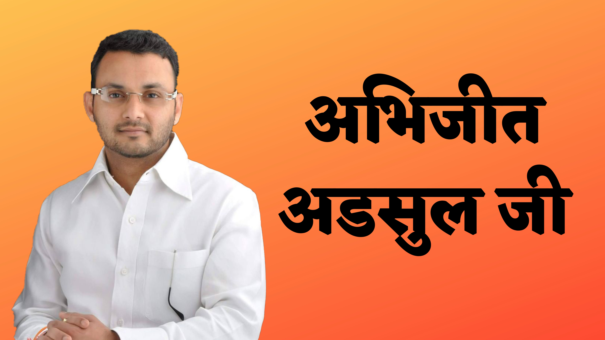

Abhijit Adsul was born and raised in Amravati District. He hails from a humble background
and grew up in a close-knit community that instilled in him strong values of hard work and integrity.
From a young age, Adsul displayed exceptional academic prowess, which paved the way for his educational
journey. Adsul completed his primary and secondary education in Amravati District, excelling in various
subjects. His passion for knowledge and thirst for intellectual growth led him to pursue higher
education. He obtained a Bachelor's degree in Political Science from a renowned institution, where he
further honed his analytical and critical thinking skills.

Political Career and Contributions
Adsuls entry into politics marked the beginning of his remarkable journey of public service. He joined a
prominent political party and quickly garnered attention for his exceptional leadership abilities and
dedication to the welfare of the people. Adsuls sincere efforts and unwavering commitment to the
betterment of society propelled him into various positions of influence and authority. With a vision of
transforming Amravati District into a thriving hub of progress and development, Adsul tirelessly worked
towards implementing key initiatives and policies. His focus on improving infrastructure, healthcare,
education, and employment opportunities has positively impacted the lives of countless individuals in
the region.
Key Achievements
Infrastructure Development Under Adsuls leadership, Amravati District has witnessed a remarkable
transformation in its infrastructure. Several significant projects, including the construction of roads,
bridges, and public facilities, have been initiated to enhance connectivity and facilitate economic
growth. Adsuls unwavering commitment to improving the quality of life for residents has been
instrumental in driving progress and development.
Educational Reforms
Recognizing the importance of education as a catalyst for socio-economic advancement, Adsul has played a
pivotal role in implementing crucial reforms in the education sector. He has championed initiatives to
enhance educational infrastructure, improve access to quality education, and promote skill development
programs. These efforts have empowered the youth of Amravati District with the necessary tools to shape
a prosperous future.
Healthcare Initiatives
With a vision to ensure accessible and affordable healthcare for all, Adsul has spearheaded various
healthcare initiatives. He has worked towards strengthening healthcare infrastructure, setting up
medical facilities in remote areas, and introducing programs to raise awareness about preventive
healthcare practices. Adsuls endeavors have significantly contributed to improving the overall
well-being of the residents of Amravati District.
Future Endeavors and Vision
Looking ahead, Abhijit Adsul remains committed to serving the people of Amravati District and driving
sustainable growth. His vision encompasses empowering marginalized communities, promoting
entrepreneurship, and fostering a culture of innovation. By leveraging his expertise and collaborating
with stakeholders, Adsul aims to propel Amravati District to new heights of prosperity and create an
inclusive environment for all.